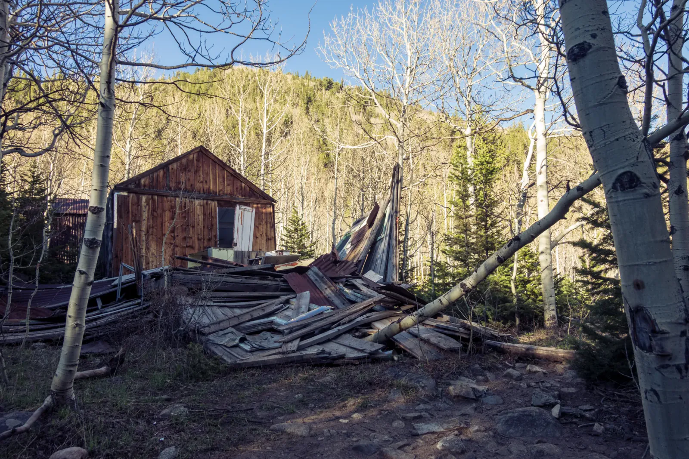

Winter Lets Go
At the end of May I headed into the mountains west of Nederland with a tent and an Australian Shepherd, right as the snowpack was melting out. On the way in I passed an old wooden cabin that had mostly given up. Its boards lay heaped among the still-bare aspens, next to a weathered shed that somehow remained standing. I couldn't help wondering who lived there and how many winters of snow it took to bring the rest of it down. A little further on, the creeks ran loud and white, and the cascades poured over dark boulders beneath spruce and fir. I spent that evening beside them, holding the shutter open until all that noise turned to silk.
I pitched the tent on the rocky shore of an alpine lake, with snow still lying on the slopes behind it. After dark a campfire flickered beneath the stars, and a red light made for a little light painting. By morning the lake was ice-free and a deep blue, with a long snowy ridge above it and a single puffy cloud for company. The Aussie went after every leftover snowbank! From a viewpoint above the valley, the forest rolled out below me with a small lake at the bottom. In late May, expect snow on the shady stretches of trail and creek crossings running high and cold.

Farther down the trail, a plank boardwalk skirted a still pond that held the trees and clouds in its reflection, and not far off what looked like a beaver dam was holding back the stream. Before the trip was over there was one more waterfall, a staircase of whitewater dropping into sand the color of rust. The Indian Peaks sit right on the Continental Divide, and in late May a whole winter's worth of snow was deciding which way to run. It felt good to be back in the Rockies, and better still to have them this close to home.